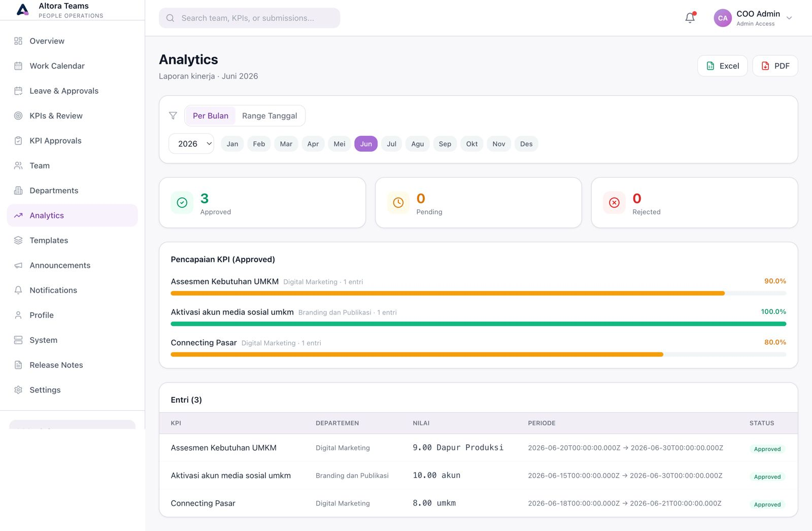
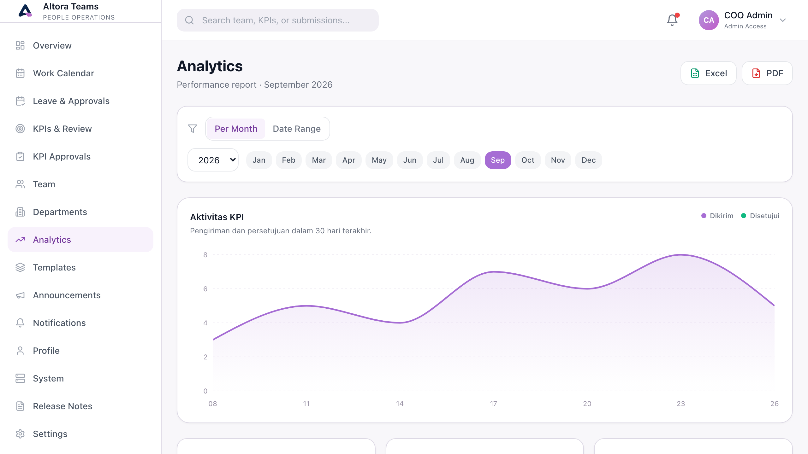

KPI & Review
Target per team, periodical submission, approach, score, and review record in one plot.
Implementation documentation
One workspace to make the team's work rhythm more visible:

Operational Context
Altora Teams documented jobs and performance in a single line that the team, manager, and operating owner - without making people move spreadsheet or chat to search for status.
Documented module
Target per team, periodical submission, approach, score, and review record in one plot.
Project cross-project planning, person, and department of visible status.
Request leave and documented applications to keep the team rhythm clear.
Performa summary, KPI activity, as well as export Excel and PDF reports.
Interface evidence


Implementation line
The needs of each organization are different. We started by looking at the team structure, the array, and the metric that needed to be read in operations.